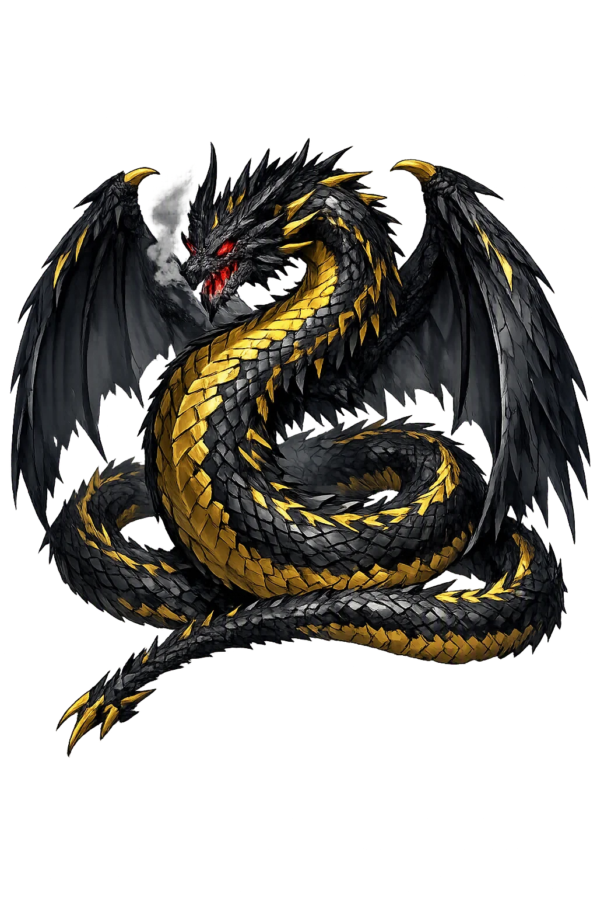
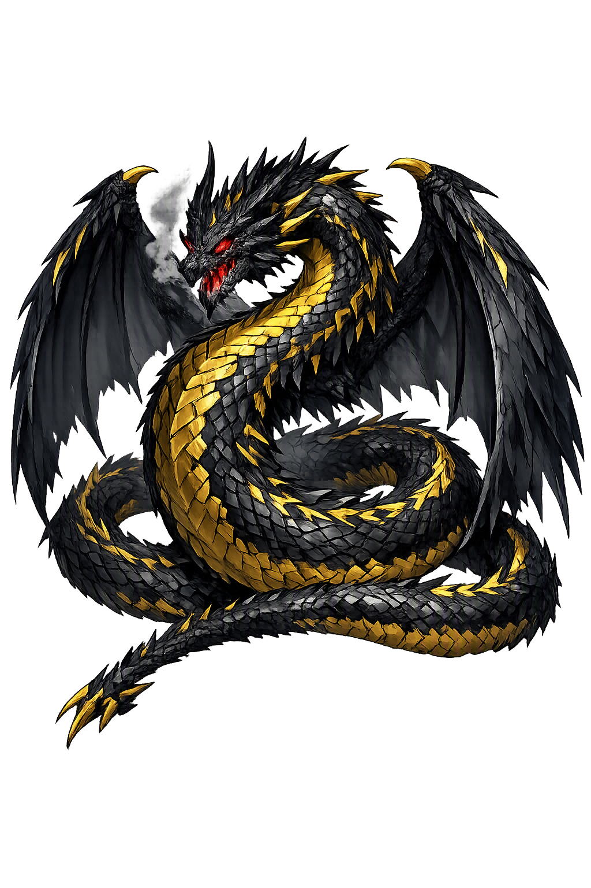

The Authentic Orthography
Dwarf turned Dragon · figure in Germanic heroic legend

Unicode restoration and ASCII comparison
ᚠᛅᚠᚾᛁᚱ
The name in its original Norse form. Fáfnir (ᚠᛅᚠᚾᛁᚱ) is attested in the source tradition — “figure in Germanic heroic legend”. Its acute stress marks carry the full phonetic and orthographic weight of the source tradition.
fafnir
Reduced to plain fafnir, the name loses everything that made it specific: acute stress marks. What remains is an ASCII string that machines can parse but that no longer speaks with its original voice.
Fáfnir
The Unicode restoration recovers what ASCII flattened. Fáfnir restores acute stress marks, returning the name to its original written dignity. The domain encodes to Punycode, but the browser displays the truth.
Fáfnir.com → xn--ffnir-xqa.com
The non-ASCII characters in Fáfnir are encoded while the ASCII remains visible. To the DNS, it is Punycode. To humanity, it is Fáfnir.
How Fáfnir travels from ancient script to the modern URL
Owned, ideal, and ASCII forms of Fáfnir
Fáfnir
Restores ᚠᛅᚠᚾᛁᚱ. The live temple domain — fáfnir.com.
fafnir
Flattens ᚠᛅᚠᚾᛁᚱ. The plain ASCII fallback — what DNS and legacy systems see.
How Fáfnir was spoken
The domain of Fáfnir
In the norse tradition, Fáfnir governed gold, greed, and the metamorphosis that greed performs. The son of Hreiðmarr who became the dragon of Gnitaheiðr, he is the living proof of the curse he served: the weregild gold of the dwarf Andvari unmade a farmer's son into a poison-breathing serpent, and turned a name that means the embracer into an emblem of everything that hoarding destroys.
His domain is the moral underside of heroic legend: patricide for an inheritance, kinship dissolved by a ring, and the slow alchemical change of a man into the monster that guards what he cannot use. When Sigurðr's sword found his heart, the gold passed on — and the curse passed with it, through the hall of the Gjúkungs to the ruin of the whole Vǫlsung line.
The ring of the dwarf Andvari, taken by Loki as ransom and cursed aloud to bring death to every owner; it drove Fáfnir to patricide.
On the Gnita heath greed finished its work: Fáfnir took on the likeness of a serpent, lay upon his father's gold, and breathed poison over the land.
The sword Reginn forged for his foster-son Sigurðr; from a trench dug in the dragon's path, Sigurðr thrust it upward into Fáfnir's heart.
Roasting the dragon's heart, Sigurðr burned his thumb and tasted the blood; at once he understood the speech of birds and heard the nuthatches betray Reginn.
Stories of Fáfnir
Fáfnir is the dragon at the hinge of the Vǫlsung cycle — born the son of the farmer-mage Hreiðmarr, brother to the shape-shifting Ótr and to Reginn the smith. When the gods paid the weregild for Ótr's death with the dwarf Andvari's cursed hoard, Fáfnir murdered his own father for the gold, refused Reginn his share, and withdrew to Gnitaheiðr, where greed slowly remade him: the Eddic poems call him an ormr, a creeping serpent who lay upon his inheritance and breathed poison over the heath. His death at the hand of Reginn's foster-son Sigurðr — struck from a trench beneath the dragon's path — is the pivot on which the whole heroic tragedy turns, for the curse of the ring Andvaranautr passed on with the gold to destroy every house that held it. The tale was carved in stone in eleventh-century Sweden, sung in the Codex Regius, and retold by Wagner and Tolkien; no Germanic legend has carried further.
Óðinn, Hœnir, and Loki came traveling to a waterfall where an otter sat eating a salmon, half-asleep. Loki killed the otter with a stone, and the gods flayed it and carried the skin as a trophy — but the otter was Ótr, son of Hreiðmarr, who had the craft to take that shape. That night Hreiðmarr seized the gods and named the ransom: the otter-skin was to be filled with gold and covered with gold, inside and out.
Loki borrowed Rán's net and caught the dwarf Andvari, who lived in the falls in the likeness of a pike, and stripped him of his hoard down to the last ring — Andvaranautr. Andvari cursed it as he went into the rock: the gold would be the death of two brothers and the strife of eight princes, and no man should joy in his wealth. When the skin was covered, Hreiðmarr saw one whisker still showing, and Óðinn had to give up the ring to hide it. So the ransom that was meant to settle a killing carried a spoken curse into the house that received it.
Fáfnir and Reginn demanded the blood-gold from their father as their share after Ótr. Hreiðmarr refused — and Fáfnir put his sword through his father sofanda, sleeping, while the old man called on his daughters to witness that his life was spent. Fáfnir took all the gold, and when Reginn asked for his inheritance, Fáfnir gave him a plain no.
Then Fáfnir went out to Gnitaheiðr, the Gnita heath, and there his greed finished what the curse had begun: he took on the likeness of a serpent — var í orms líki, as Reginsmál puts it — and lay brooding on the gold, wearing the ægishjálmr, the helm of terror that all living things feared, and blowing poison across the land so that none dared come near. Reginn, the cunning smith, went to the court of King Hjálprekr and became foster-father to the young Sigurðr, son of Sigmundr — and began, patiently, to point the boy at his brother.
Reginn forged for Sigurðr the sword Gramr, so keen it sheared a lock of wool drifting down the Rhine and split Reginn's anvil in two. On the heath Sigurðr dug a deep trench in the dragon's track to the water and lay down in it; when Fáfnir crawled overhead, blowing venom, Sigurðr thrust Gramr upward into the heart. The dying dragon questioned his killer — Fáfnismál grants him a long, sardonic deathbed dialogue — and warned him twice: þér verða þeir baugar at bana, these rings will be your death.
Reginn cut out the heart and set Sigurðr to roast it. Testing whether it was done, Sigurðr burned his thumb and thrust it into his mouth — and the moment the dragon's heart-blood touched his tongue, he understood the speech of birds. The nuthatches in the thicket told him Reginn meant to betray him and claim the gold alone; Sigurðr struck off Reginn's head, ate the heart, and loaded the hoard onto his horse Grani. He had won the treasure — and inherited the curse, which would ride with the gold to the hall of the Gjúkungs and bring down the whole Vǫlsung line.
Names are not merely labels; they are compressed worlds. Fáfnir — the embracer — names a man who embraced gold so completely that the embrace became his skin. The medieval scribes who wrote the name marked its long á with care, and the Unicode restoration keeps that mark: the length of the first syllable is the length of the boast he traded for a life. A dragon, in the end, is what a hoard does to the one who will not let it go.
Enter Extended Lore